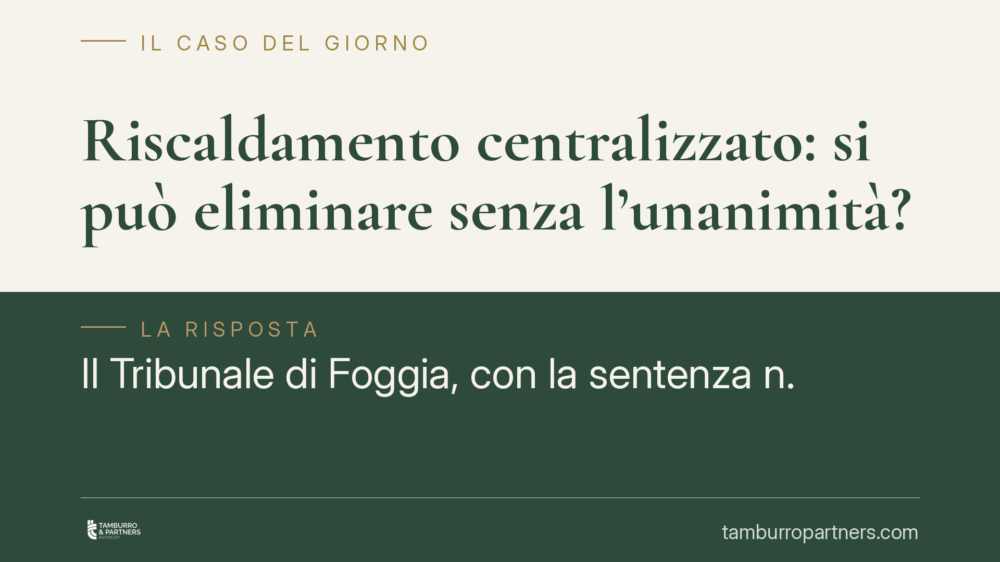

Riscaldamento centralizzato: si può eliminare senza l'unanimità?
Il Tribunale di Foggia, con la sentenza n. 2051/2026, ha stabilito che il passaggio dal riscaldamento centralizzato agli impianti autonomi, se finalizzato al contenimento energetico, può essere deliberato a maggioranza qualificata e non richiede l'unanimità. Una distinzione che incide direttamente sulla validità delle delibere assembleari e sulle possibili impugnazioni dei condomini contrari.

Il caso
Alcuni condomini avevano impugnato la delibera con cui l'assemblea aveva approvato la dismissione dell'impianto di riscaldamento centralizzato, sostituendolo con impianti autonomi nelle singole unità. La tesi degli opponenti era semplice: trattandosi di soppressione di un servizio comune, sarebbe stato necessario il consenso unanime di tutti i partecipanti.
Il Tribunale di Foggia ha respinto questa impostazione. La decisione non elimina il servizio di riscaldamento, ma ne modifica le modalità di erogazione in chiave di efficienza energetica. Per questo motivo rientra nelle delibere assumibili a maggioranza qualificata.
Inquadramento normativo
Il punto di partenza è l'art. 26, comma 2, della Legge 10/1991, che disciplina gli interventi sugli edifici volti al contenimento del consumo energetico. La norma consente di deliberare tali interventi con le maggioranze previste per le innovazioni, e non con l'unanimità.
Il secondo riferimento è l'art. 1120 c.c., che regola le innovazioni condominiali, in combinato con l'art. 1136 c.c. sulle maggioranze assembleari. Le innovazioni dirette al risparmio energetico beneficiano di un quorum agevolato: è sufficiente il voto favorevole della maggioranza degli intervenuti che rappresenti almeno la metà del valore dell'edificio (500 millesimi).
La chiave di lettura della sentenza sta nella distinzione tra due ipotesi. Una cosa è la soppressione abdicativa del servizio, cioè la rinuncia pura e semplice al riscaldamento comune, che priva i condomini di un'utilità senza offrire alternative: questa richiede l'unanimità. Altra cosa è la trasformazione tecnica dell'impianto, che mantiene il servizio ma ne cambia la struttura per ridurre i consumi: in questo caso basta la maggioranza qualificata.
Implicazioni pratiche
Per gli amministratori e per i condomini interessati a modernizzare l'impianto, la decisione conferma un principio utile. Il passaggio agli autonomi, oggi spesso dettato da ragioni di costo e di efficienza, non è ostaggio del veto del singolo.
Attenzione però al presupposto: la delibera deve essere sorretta da una reale finalità di contenimento energetico, documentata e verificabile. Non è sufficiente invocare genericamente il risparmio. Serve una base tecnica che dimostri il miglioramento delle prestazioni energetiche dell'edificio.
I condomini contrari conservano comunque strumenti di tutela. Possono contestare la delibera se l'intervento, nei fatti, si risolve in una soppressione del servizio priva di una valida alternativa, oppure se mancano i requisiti tecnici e documentali che giustificano il quorum ridotto.
Va inoltre ricordato che la dismissione del centralizzato comporta la gestione dei costi di distacco e la contabilizzazione del calore residuo, aspetti che vanno disciplinati con precisione per evitare contenziosi successivi.
Cosa fare in concreto
- Acquisite una relazione tecnica redatta da un professionista abilitato che attesti il miglioramento dell'efficienza energetica derivante dalla trasformazione dell'impianto.
- Verificate il quorum prima della delibera: maggioranza degli intervenuti e almeno 500 millesimi, come previsto per le innovazioni energetiche.
- Redigete un verbale analitico che dia conto della finalità di risparmio e distingua l'intervento dalla mera soppressione del servizio.
- Disciplinate la fase transitoria, inclusi i costi di adeguamento, lo smaltimento dell'impianto comune e la ripartizione delle spese residue.
- Valutate le posizioni dei contrari: un confronto preventivo riduce il rischio di impugnazioni e rafforza la tenuta della delibera.
La sentenza del Tribunale di Foggia offre un criterio chiaro, ma la sua applicazione dipende dalla qualità della documentazione tecnica e dalla correttezza formale del procedimento assembleare. Consigliamo di affrontare questi passaggi con un supporto professionale, soprattutto quando la composizione del condominio lascia prevedere opposizioni.
Disclaimer
Contributo informativo a cura di Tamburro & Partners - Avv. Giuseppe Tamburro. Non costituisce parere legale.
Ogni condominio ha una storia a sé.
Se gestisci un'amministrazione e vuoi un confronto su una specifica questione condominiale, scrivi allo studio. Ti rispondiamo entro un giorno lavorativo.